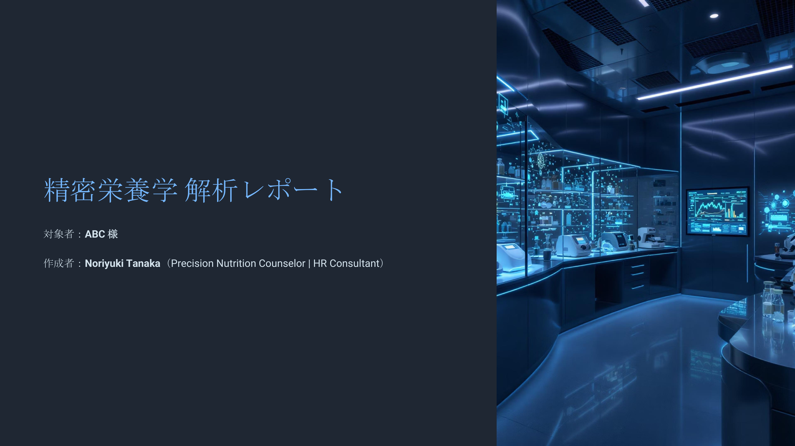
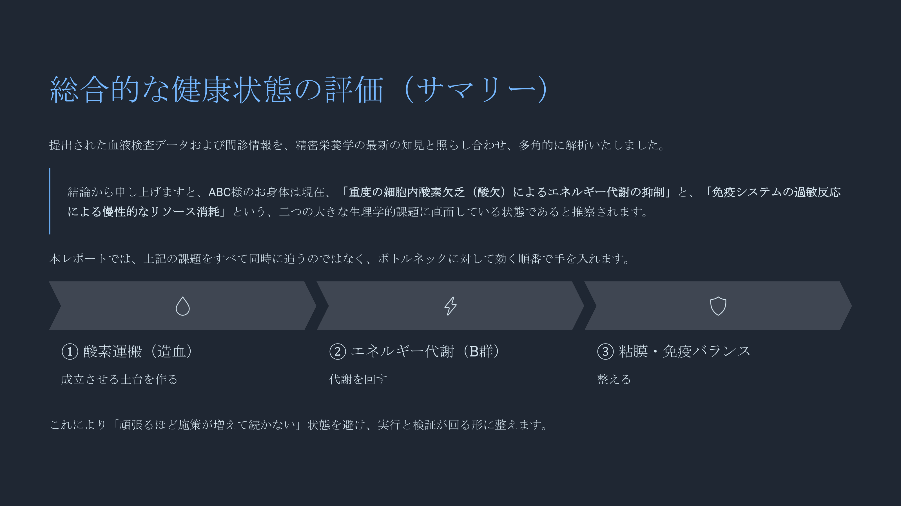

変わらない理由は、"順番"。
努力が足りないのではなく、やる順番が違うだけかもしれません。
お手元のデータをAIが解析し、「何からやるか」が分かる1枚をつくります。
何から変えるべきか、決められない
始めても、忙しくなると続かない
健診は異常なし。でも不調がある
自分に効く順番が、分からない
情報は足りている。
足りないのは、「何からやるか」の整理。
そのために、健康地図をつくります。
すでに持っているデータで始められます。
※データが多いほど精度が高まります。まずはお手元にあるものだけでOK。
データはある。
あとは「決める人」がいればいい。
神宮前統合医療クリニック監修のAI解析ツール 8weeks.ai が、2,000人超の日本人データをもとにあなたの状態を解析。
解析レポートをもとに、カウンセラーが「何からやるか」の優先順位を設計します。
まず「何からやるか」が1枚で分かる設計。
その裏側に、詳細な分析レポートがあります。
※医療行為ではありません。必要な場合は受診を推奨します。
その結果、あなたに届くもの。
これは実際に提供している内容の一部です。
何から整えるべきかが、1枚で分かります。


※サンプルPDFが開きます
一度、自分の健康地図を見てみませんか。
自分の健康地図を作ってみるLearn
Pricing
Monthly Plan
税込 · クレジットカード決済（Stripe）
※まず無料で方向性を整理してから、ご判断ください。
※本サービスは医療行為ではありません。生活改善のサポートです。
About
NORIYUKI TANAKA · Precision Nutrition Counselor
日米企業の戦略人事として、5,000名以上の組織で「何を優先するか」を決めてきました。
やることは分かっていても、何から手をつけるかで結果が変わります。
私は、「何からやるか」を一緒に決める人です。
FAQ